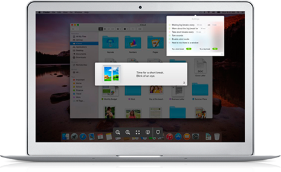

Features:
Screen blocking during break exercises.
Short break with eye exercises.
Visual explanation of every exercise.
Notifications announcing a long break coming.
Strict mode that doesn't allow skipping the breaks.
Customizable preferences.
and more...

EyeLeo